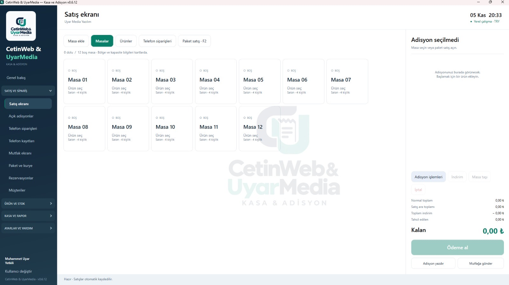

Masa ve sipariş
Masa açma ve kapatma, boş/dolu masalar, masalar arası aktarım, sipariş notları ve masa bazlı adisyon.
Kasapos modüllerini açarak ayrıntılarını inceleyin.

Masa siparişinden gün sonu raporlarına kadar günlük operasyonunuz tek yazılımda.
Masa açma ve kapatma, boş/dolu masalar, masalar arası aktarım, sipariş notları ve masa bazlı adisyon.
Nakit ve kart tahsilatı, yüzdelik indirim, ürün fiyatı düzenleme ve satış geçmişi.
Ürün ve kategori tanımlama, stok malzemesi eşleştirme, satışla otomatik stok düşümü.
Müşteri adı, telefon ve adres kaydı, paket siparişleri ve durum takibi.
CetinWeb & UyarMedia tarafından Kasapos için özel olarak geliştirilen Kasapos Connect Android mobil uygulamasıyla telefonunuzu kasa bilgisayarına bağlayın. Gelen arama numarasını ve kayıtlı müşteri bilgilerini POS ekranında görüntüleyerek paket siparişlerini daha kolay oluşturun. Bağlantı için Android telefon ve kasa bilgisayarı aynı Wi-Fi ağına bağlı olmalıdır. Bunun dışında Kasapos’un temel masa, satış, adisyon ve stok işlemleri için Wi-Fi veya internet bağlantısı gerekmez.
Siparişleri mutfağa gönderme, hazırlanıyor, hazır ve teslim durumlarını takip etme.
Tarih ve saat bazlı rezervasyon oluşturma, kayıtları görüntüleme ve temizleme.
Garson ve yetkili rolleri, işlem kayıtları ve vardiya yönetimi.
Ciro, nakit/kart tahsilatları, indirim tutarları ve tarih bazlı raporlar.
Yerel veritabanı, gün sonu yedekleme ve geri yükleme desteği.
HWID cihaz eşleştirme, lisans anahtarı ve süresiz kullanım.
Windows kurulumu, masaüstü kısayolu ve yerel çalışma altyapısı. Kasapos programının içinde yer alan kendi kullanım rehberi sayesinde masa, sipariş, adisyon, stok ve diğer işlemlerin nasıl yapılacağını program üzerinden inceleyebilirsiniz.
Kasapos Connect, Android telefonlar için geliştirilmiştir. Gelen arama bilgilerinin otomatik aktarımı telefon izinlerine ve cihaz davranışına göre değişebilir.